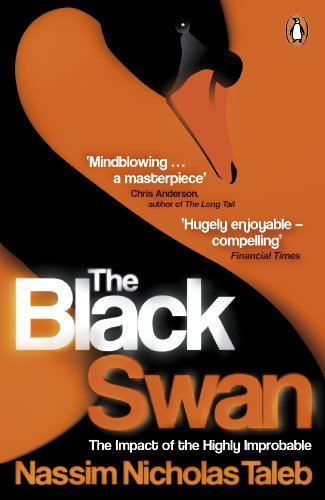

Library › Money & Finance
The Black Swan — Summary & Key Lessons

The impact of the highly improbable — why history is driven by events nobody predicted, and how to live in a world you can't forecast.
📖 OPEN THE FULL INTERACTIVE BREAKDOWN →🌐 Read it in Hindi, Hinglish, Gujarati, Tamil & 22 more languages — free, with audio.
💡 The Big Idea
A Black Swan has three properties: it's an outlier beyond regular expectations, it carries extreme impact, and — the cruel joke — we retrofit explanations afterward making it seem predictable. Taleb's assault on modern certainty: we live in Extremistan (where single events dominate totals — wealth, book sales, wars, markets) while using tools built for Mediocristan (heights, weights — where no single observation changes much); the turkey's 1,000 days of confirmed safety end the day before Thanksgiving; experts in swan-dominated domains predict no better than chance but charge more; and the narrative fallacy, confirmation bias, and silent evidence (the drowned worshippers who prayed just as hard) manufacture our illusion of understanding. The response isn't better prediction — it's the barbell: extreme safety on one side, small wild bets on the other, and maximal exposure to positive swans.
🧠 The 6 Key Lessons
Lesson 1: The Turkey Problem: 1,000 Days of Confirmation
Chapters 1–4: The Empirics of Extremistan
A turkey is fed daily for 1,000 days; each feeding strengthens its statistical confidence that humans love turkeys — and its confidence peaks precisely on the day before Thanksgiving. Taleb's point cuts every domain: evidence of absence isn't absence of risk, and the PAST is a treacherous teacher exactly where it matters most — the 'never happened before' events are the ones that redraw everything (every market's worst day was, before it happened, impossible by the historical data). The deeper distinction: MEDIOCRISTAN (physical quantities — add the world's fattest human to a stadium's weight and nothing changes) versus EXTREMISTAN (informational/economic quantities — add Bezos to a stadium's wealth average and everything changes). We instinctively model everything as Mediocristan because our brains evolved there; our fortunes, careers, and crises live in Extremistan.
📖 Example: Taleb's own formation: growing up in Lebanon, whose sophisticated, stable, cosmopolitan society — 'a paradise, everyone said permanent' — collapsed into civil war in months; the adults kept predicting the war would end 'in weeks' for FIFTEEN YEARS. The… Read the full example →
⚡ Do this: Sort your major exposures (income, investments, health, location) into Mediocristan vs Extremistan. For everything in Extremistan, stop trusting track-record safety — 'it's never happened' is the turkey's exact evidence. Ask instead: what does day 1,001 look like, and do I survive it?
Lesson 2: The Narrative Fallacy & Silent Evidence
Chapters 5–8: We Just Can't Predict
Two machines manufacture our illusion of understanding. THE NARRATIVE FALLACY: brains compulsively compress events into cause-effect stories (cheaper to store, easier to recall) — so history FEELS explicable in reverse while remaining opaque forward; every crisis gets its tidy retrospective chain of causes that precisely nobody assembled in advance. SILENT EVIDENCE: we study survivors because the dead don't write memoirs — the praying sailors who drowned anyway, the risk-taking entrepreneurs who failed with identical strategies to the celebrated winners, the 'skills of successful people' books built entirely on graveyards' missing testimony. Combined with CONFIRMATION bias (we hunt for supporting instances, though a million white swans prove nothing while one black one disproves everything), the result: we are wired to feel certain in exactly the domains where certainty is impossible.
📖 Example: Taleb's ancient anchor: Diagoras the atheist, shown painted tablets of worshippers who prayed and survived shipwreck as proof of the gods — asked, 'and where are the pictures of those who prayed and drowned?' Every business bestseller commits the same crime:… Read the full example →
⚡ Do this: Install the two filters: for every success formula you're sold, ask 'where are the failures who did the same thing?' (demand the cemetery data); for every explanation you accept, ask 'was this predicted forward by anyone using this logic — or only narrated backward?' Read history as calibration for surprise, not as a prediction engine.
Lesson 3: Expert Problems: The Empty Suits of Extremistan
Chapters 9–13: The Scandal of Prediction
Taleb's taxonomy: some experts are real (their domains give fast feedback and stable rules — surgeons, chess masters, plumbers), and some are EMPTY SUITS — confident forecasters in swan-dominated domains (economists, political analysts, strategic planners) whose predictions test at or below chance while their confidence tests maximal. The mechanisms: no accountability loop (forecasts forgotten, hedged, or narrated into 'basically right'), degrees and vocabulary substituting for track records, and the epistemic arrogance gap — studies show experts' confidence intervals capture reality far less often than claimed, and MORE information increases confidence faster than accuracy. Corporate planning inherits all of it: the five-year plan as ritual, precise to the decimal about a future its authors couldn't predict to the sign. Taleb's alternative posture: epistemic humility — ranking beliefs by robustness, tracking your own prediction record, and treating anyone's confident long-range forecast as entertainment.
📖 Example: The prediction-industry audit Taleb loves citing: Philip Tetlock's decades-long study of ~28,000 expert predictions — the average expert barely beat 'a dart-throwing chimpanzee,' fame correlated NEGATIVELY with accuracy, and the more prominent the pundit,… Read the full example →
⚡ Do this: Start a prediction journal — yours and your favorite experts': log forecasts with dates and confidence, review quarterly. Fire (or discount to zero) any source that won't be pinned to testable claims. In your own field, list which parts are surgeon-domain (trust expertise) vs forecaster-domain (trust nobody, prepare instead).
Lesson 4: The Barbell: Position for Swans Instead of Predicting Them
Chapters 13–19: What Do You Do If You Cannot Predict?
Taleb's answer to unpredictability is exposure engineering. THE BARBELL: put ~85-90% in maximal safety (things no swan can destroy) and 10-15% in maximal, capped-downside wildness (venture bets, options, projects with unlimited upside) — and NOTHING in the deceptive middle ('moderate risk' being where hidden swans live, mislabeled as safe). Distinguish swan EXPOSURE: negative-swan domains (banking, war zones, leverage — where one event ruins you: minimize, insure, avoid) versus positive-swan domains (publishing, startups, research, parties — where one event makes you: maximize cheap tickets). His life applications: favor optionality over plans (things you can change beat things you must defend), go to the parties (serendipity is a positive-swan lottery with free tickets), live in cities, expose yourself to maximum favorable accidents — and never run for trains: 'missing a train is only painful if you run after it' — the elegance of not needing any particular outcome is itself swan-armor.
📖 Example: Taleb's own barbell made the book credible: Treasury bills on one side, far-out-of-the-money options on the other — bleeding tiny premiums for years, then collecting fortunes when 1987 (and later, via his disciples' fund, 2008) delivered the impossible. The… Read the full example →
⚡ Do this: Build your barbell this quarter: (1) secure the safe side — emergency fund, skills, health: the base no swan touches; (2) buy cheap positive-swan tickets — publish, network widely, take the small equity stake, attend the room; (3) exit the middle — anything with moderate visible return and hidden catastrophic tail (leverage, single-point dependencies). Then audit monthly: am I exposed to good accidents and armored against bad ones?
Lesson 5: The Ludic Fallacy: Games Have Rules, Life Doesn't
Part 3: The Errors
Taleb's term for a subtle error: we treat life like a game with known rules and calculable odds, when in reality the important events are precisely the ones outside the rulebook. The casino (ludic) model of risk — dice, probabilities, normal distributions — feels scientific but misleads: real-world 'tails' are fatter and wilder than any model predicts. The person who plans only for the listed risks is planning for the game that won't happen. The corrective: leave room in every plan for the event you haven't imagined — build robustness, not precision. The unthinkable is thinkable once you admit you can't think of it.
📖 Example: Taleb points to financial models that priced derivatives using 'normal' distributions — mathematically elegant, completely blind to the crashes that actually happened. Every major financial disaster was a 'ludic fallacy': the game assumed away exactly the… Read the full example →
⚡ Do this: Review one important plan and ask: 'What event, outside all my listed risks, could break this?' Build one buffer against that unlisted possibility.
Lesson 6: The Black Swan of Opportunity: Use Good Luck Like a Pro
Part 4: The Strategy
Taleb's asymmetry cuts both ways: black swans are catastrophes — or windfalls. The same logic that tells you to protect against the unexpected tells you to position FOR the unexpected upside: keep a small portion of your resources (time, money, attention) allocated to long-shot, high-upside opportunities. The 'positive black swan' — the chance meeting, the weird idea, the unlikely experiment — is how revolutions and fortunes are made. The strategy: don't predict which long shot will hit; just make sure you're present when the surprising ones pay off. You can't forecast the lottery number, but you can buy a ticket cheaply.
📖 Example: Taleb notes that almost every transformative discovery — penicillin, the internet's commercial use, many venture fortunes — was accidental: someone was positioned to notice and act on an unexpected result. The people who won were exposed to many small… Read the full example →
⚡ Do this: Set aside 5% of your weekly time for 'positive black swan' exposure — a new person to meet, a strange idea to test, a skill outside your field. Keep the exposure cheap and varied.
✅ 5-Step Action Plan
- Sort your life into Mediocristan and Extremistan; respect the difference.
- Demand cemetery data for every success formula; distrust backward narratives.
- Keep the prediction journal; fire unaccountable forecasters.
- Build the barbell: extreme safety + cheap wild tickets, nothing in the middle.
- Maximize positive-swan exposure: publish, connect, show up — and never chase trains.
⚠️ When This Doesn't Work
Taleb's 'prepare for the unpredictable' is wise and, taken to extremes, paralysing — you cannot hedge against everything, and a life spent fearing tail risks is itself a risk. Silicon Valley Bank knew the black-swan lesson and still died, because its 'preparation' (bond portfolio, treasury management) was itself the vulnerability. The practical version isn't paranoia, it's optionality: stay liquid enough to survive surprises, then get on with the work. Perfect preparedness is another black swan waiting.
💀 The Graveyard Proves It
🏦 Silicon Valley Bank — The First Bank Run at Twitter Speed. Burn: $200B bank — dead in 48 hours. Read the full case study →
💬 Best Quotes from The Black Swan
- “History does not crawl, it jumps.”
- “The inability to predict outliers implies the inability to predict the course of history.”
- “Missing a train is only painful if you run after it.”
Interactive version: mark lessons as read, listen in your language, share quote cards.